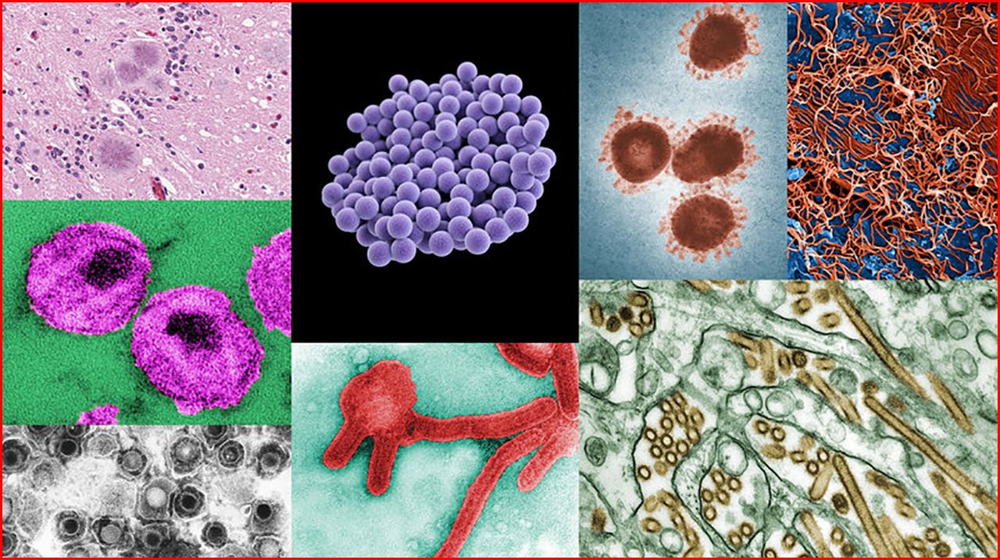
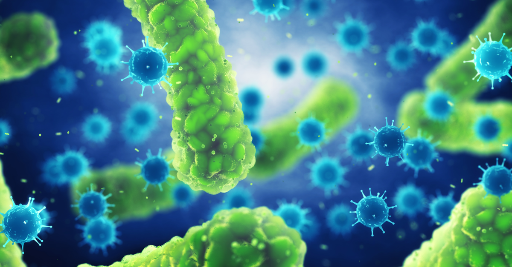
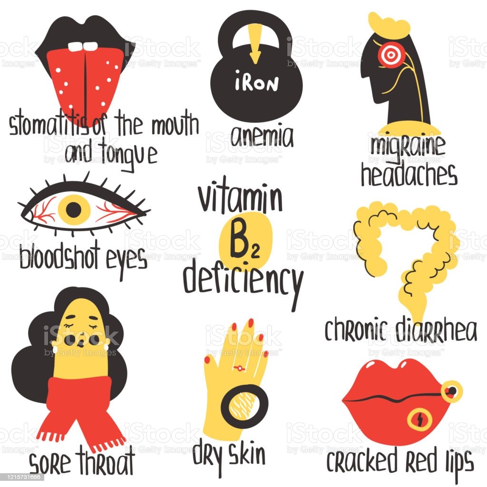
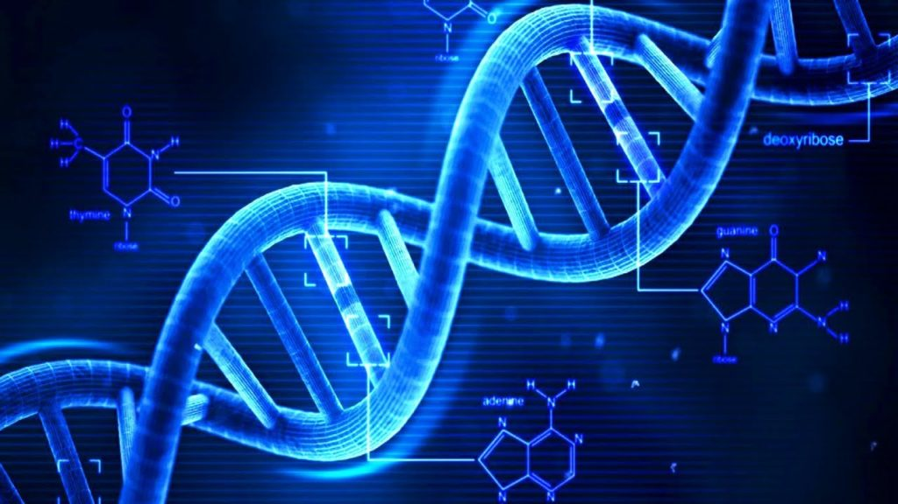
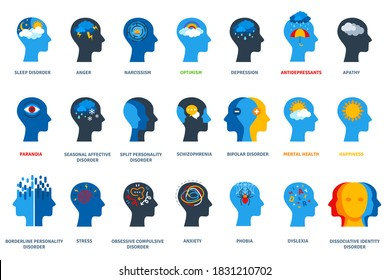

One Health - In this website you will get precations,symtoms of each diseases and also few article,books,skills and Quotes
A disorder of structure or function in a human, animal, or plant, especially one that produces specific symptoms or that affects a specific location and is not simply a direct result of physical injury.A disease is a particular abnormal condition that negatively affects the structure or function of all or part of an organism, and that is not due to any immediate external injury. Diseases are often known to be medical conditions that are associated with specific signs and symptoms.
There are four main types of disease: infectious diseases, deficiency diseases, hereditary diseases (including both genetic diseases and non-genetic hereditary diseases), and physiological diseases. Diseases can also be classified in other ways, such as communicable and non-communicable diseases.
Infectious diseases are disorders caused by organisms — such as bacteria, viruses, fungi or parasites. Many organisms live in and on our bodies. They're normally harmless or even helpful. But under certain conditions, some organisms may cause disease. Some infectious diseases can be passed from person to person.
A deficiency disease can be defined as a disease which is caused by the lack of essential nutrients or dietary elements such as vitamins and minerals in the human body. Deficiency disease examples: Vitamin B1 deficiency causes beriberi, lack of iron in the body can lead to anaemia.
Image result for what is hereditary diseases.A hereditary disease is often described as something that “runs in the family.” It is passed down from one or both parents to a child, who may then pass it to his or her children.Examples of single gene inheritance disorders include: Cystic fibrosis. Sickle-cell anemia. Marfan syndrome.
A physiological disorder is an illness that interferes with the way that the functions of the. body are carried out. Examples are: Diabetes, Alzheimer's, Parkinson's, rheumatoid arthritis, asthma, leukemia, coronary heart. disease, any form of cancer.
A communicable disease is one that is spread from one person to another through a variety of ways that include: contact with blood and bodily fluids; breathing in an airborne virus; or by being bitten by an insect.
A non-communicable disease (NCD) is a disease that is not transmissible directly from one person to another. NCDs include Parkinson's disease, autoimmune diseases, strokes, most heart diseases, most cancers, diabetes, chronic kidney disease,cataracts, and others.